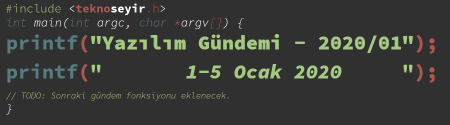

Yazılım Gündemi - 2020/01
1-5 Ocak 2020
İçindekiler

< Önceki Gündem | 1-5 Ocak 2020 | Sonraki Gündem >
1 Rust dilinin 32-bit Apple sistemler için desteği azalıyor
Rust, gün geçtikçe popülerliği daha da artan bir programlama dili. Yazılım gündemi yazıları yazmaya başladığımdan beri bunu daha iyi görüyorum. Hemen her hafta Rust ile ilgili bir gelişme oluyor, olmazsa bile geliştiricilerin ilgileri gitgide artıyor. Bununla birlikte Rust'ın geliştirilme süreci de hızla devam ediyor. Bir önceki yazılım gündeminde Rust programlama dilinin 1.41.0 sürümünün yayınlandığını duyurmuştum. Bu hafta ise bloglarında yayınlandıkları bir yazı ile 1.42.0 sürümü itibariyle, 32-bit Apple sistemler için Rust programlama dilinin desteğinin azaltıldığını açıkladılar ve bu platformun destek sürecini Tier 3 ismini verdikleri kategoriye taşıdılar.
Rust geliştirici takımının çeşitli platformlardaki destek süreçlerini tanımladıkları şöyle bir dokümanları mevcut: Platform Support. Bu dokümana göre üç destek grubu var. Bunlar şu şekilde:
- Tier 1: Bu kategorideki platformlarda Rust'ın çalışması garanti edilmiştir.
- Tier 2: Rust'ın derlenmesinin garanti edildiği platformlar listesidir.
- Tier 2.5: Yine Rust'ın derlenmesinin garanti edildiği platformlar fakat bu
listedeki platformlar için
rustuparacı ile güncelleme özelliği desteği sağlanmıyor. Kaynak kodlarını kullanarak kendiniz derlemeniz gerekiyor. - Tier 3: Hiçbir garantinin verilmediği platformlar listesi. Rust dilini kaynak kodları kullanarak bu sistemlerde derlemeye çalışabilirsiniz fakat hatalarla veya eksik özelliklerle karşılaşmanız çok mümkün.
İşte 32-bit Apple sistemler de 1.42.0 sürümüyle birlikte Tier 3 kategorisinde altında yer alacak. Bu kategori değişikliğinden etkilenen platformların kod isimleri ise bu şekilde:
- armv7-apple-ios
- armv7s-apple-ios
- i386-apple-ios
32-bit sistemlere desteğin kesilmesi günümüzde çok şaşırmadığımız bir durum elbette fakat yine de desteğin neden kesildiğini açıklamakta fayda var. Rust takımından önce zaten Apple macOS 10.15 ve iOS 11 ile birlikte 32-bit desteğini sonlandırmıştı, üstelik Xcode ile 32-bit derleme yapmanın da önüne geçmişti. Zaten günümüzde 32-bit sistem ile geliştirme yapmak pek de mümkün olmadığı için Rust takımı da böyle bir varar vermiş ve bence de yerinde bir karar.
2 Oracle, Amazon API'sini kopyalamakla suçlanıyor
Oracle ve Google arasında Java API'si (Application Programming Interface) üzerinden devam etmekte olan hukuk savaşını zaten yıllardır Haftalık Gündem Değerlendirmesi'nde dinliyoruz. Bilmeyenler için kısaca özetlemek gerekirse Google'ın Android işletim sistemini geliştirirken Java API'sini birebir kopyaladığını ve telif haklarını ihlal ettiğini söyleyen Oracle, Google'ın cezalandırılmasını istiyor. Burada kopyalamaktan kasıt kopyala&yapıştır kullanımındaki gibi değil. Google, Java'nın API sistemindeki fonksiyonellikleri ve method isimlerinin aynısını kullanarak bir nevi Java'yı yeniden yazmasından bahsediyoruz.
Bu hafta ArsTechnina sitesinde çıkan yazıda ise Oracle şirketinin Amazon'un S3 isimli veri depolama hizmetinin API sistemini kopyaladığı iddiası var. Hatta sadece iddia da değil, Oracle Cloud hizmetinin dokümantasyonundaki şu sayfa doğrudan bunu ortaya çıkıyor: Amazon S3 Compatibility API. E hal böyleyken demezler mi adama "bu ne perhiz, bu ne lahana turşusu?" diye, işte ArsTechnica da tam olarak bunu söylemiş.
Bu tarz API "kopyalamaları" her ne kadar üzerine tartışılabilir konular olsa da biraz gerekli olduğunu düşünüyorum. Amazon S3 örneğinden gidecek olursak, Amazon bulut bilişim sektöründe çok büyük bir oyuncu ve bu oyuncuyla rekabet edebilmek için onunla hemen hemen aynı özellikleri sunmak gerekiyor. Bunu yaparken de API sistemi ne kadar Amazon'unkine benzerse geliştiriciler de o kadar az efor sarf ederek Amazon ekosisteminden çıkabilirler. Yani minumum kod değişikliği ile bu dönüşümün sağlanması rekabet ortamı için önemli bir konu.
Bu konuda siz ne düşünüyorsunuz? Bu tarz API benzerliklerinin sağlanması sizce büyük firmalarla rekabet edilebilmesi için gerekli mi yoksa ne olursa olsun firma özgün bir çözüm mü sunmalı? Yorumlar bölümünde konuşalım.
3 Amerika yapay zeka yazılımlarının ihracına sınırlama getiriyor
Yapay zeka yazılımları üreten Amerika merkezli şirketler Pazartesi gününden itibaren yazılımlarını Kanada harici, deniz aşırı ülkelere ihraç ederken bir lisans almak zorunda kalacaklar. Yeni ihracat tedbiri özellikle coğrafi görüntüleme yazılımlarını ilgilendirmekle birlikte askeri ya da sivil amaçlarla olsun fark etmeksizin herhangi bir hedef belirleme süreci içeren yazılımları ve donanımları da kapsamakta.
4 Yaklaşan Etkinlikler
| Etkinlik İsmi | Yeri | Tarihi |
|---|---|---|
| Online Webinar: Text Analysis Application on Kubernetes | Online | 6 Ocak 13:00 |
| Analyze Real Time Bank Customer Data | İstanbul | 9 Ocak 19:00 |
| Domain Driven Design | İstanbul | 9 Ocak 20:30 |
| Agile Talks 2020 Episode 1 | İstanbul | 11 Ocak 11:00 |
| BÜSİBER Siber Kış Kampı 2020 | İstanbul | 13 Ocak 09:00 |
| The Future of React & Server Rendering is not a Silver Bullet | İstanbul | 16 Ocak 19:30 |
Siber Küme Kış Kampı başvuruları başladı. Son başvuru tarihi 10 Ocak.
5 Diğer Haberler
- Rust dilinin uzay çalışmalarındaki kullanım alanlarını araştıracak çalışma grubu kuruldu: AeroRust, Faydalı Kaynaklar.
- .NET Teknolojileri ile platformlar-arası (cross-platform) uygulama geliştirme kütüphanesi Uno Platform, 2.0 sürümünü duyurdu, GitHub Deposu.
- Android Emulator 29.3.4 Canary sürümü yayınlandı.
- Python için iş kuyrukları oluşturma kütüphanesi RQ, 1.2.0 sürümünü yayınladı.
- Popüler PHP HTTP istemcilerinden Guzzle, 7.0.0-beta.1 sürümünü yayınladı.
- Postman alternatifi olan Milkman, 4.0.0 sürümünü yayınladı.
6 Lisans

Yazılım Gündemi - 2020/01 yazısı Eren Hatırnaz tarafından Creative Commons Atıf-GayriTicari-AynıLisanslaPaylaş 4.0 Uluslararası Lisansı (CC BY-NC-SA 4.0) ile lisanslanmıştır.